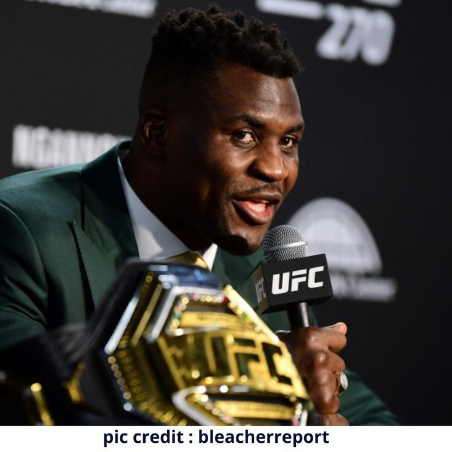

Francis Ngannou, le prédateur camerounais
Francis Ngannou est un combattant professionnel d’arts martiaux mixtes (MMA) originaire du Cameroun. Il est
né
le 5 septembre 1986 à Batié, un village où il a connu une enfance très difficile, marquée par la pauvreté,
le
divorce de ses parents et le travail dans une mine de sable. Passionné de boxe anglaise, il se met à
pratiquer
ce sport à l’âge de 22 ans à Douala, la capitale économique du pays. En 2013, il décide de tenter sa chance
en
France, où il arrive sans argent ni papiers. Il vit alors dans la rue, jusqu’à ce qu’il soit repéré par une
association humanitaire qui lui permet de s’entraîner gratuitement dans une salle d’arts martiaux mixtes à
Paris.
C’est le début d’une ascension fulgurante pour Francis Ngannou, qui se fait remarquer par son physique
impressionnant et sa puissance de frappe hors norme. Il commence sa carrière professionnelle en MMA en
novembre
2013, et enchaîne les victoires par KO ou soumission. En décembre 2015, il signe avec l’Ultimate Fighting
Championship (UFC), la plus grande organisation mondiale de MMA. Il y fait des débuts fracassants, en
remportant
six combats consécutifs avant la limite de temps, dont certains contre des adversaires de renom comme
Alistair
Overeem ou Andrei Arlovski.
En janvier 2018, il obtient sa première chance de titre mondial des poids lourds face à Stipe Miocic, le
champion en titre. Mais il subit sa première défaite à l’UFC, en étant dominé par le Croato-Américain sur
les
cinq rounds. Francis Ngannou ne se décourage pas pour autant, et reprend sa marche en avant avec quatre
nouvelles victoires expéditives contre Curtis Blaydes, Cain Velasquez, Junior dos Santos et Jairzinho
Rozenstruik.
En mars 2021, il obtient sa revanche contre Stipe Miocic, et cette fois-ci, il ne laisse aucune chance à son
rival. Il le met KO au second round avec un crochet du gauche, et devient ainsi le nouveau champion des
poids
lourds de l’UFC, et le premier Africain à détenir ce titre. Il défend ensuite sa ceinture avec succès face à
son
ancien partenaire d’entraînement, Ciryl Gane, qu’il bat par décision unanime en août 2021.
Mais en janvier 2023, Francis Ngannou crée la surprise en annonçant son départ de l’UFC, suite à un
différend
contractuel avec Dana White, le président de l’organisation. Il révèle alors qu’il a refusé une offre de 8
millions de dollars pour trois combats, car il voulait avoir plus de droits et de libertés pour lui et pour
les
autres combattants. Il demande notamment à pouvoir avoir des sponsors personnels, une assurance vie et un
avocat
pour les représenter lors des négociations. Il quitte donc l’UFC en laissant vacant son titre de champion
des
poids lourds.
En mai 2023, il s’engage avec la Professional Fighters League (PFL), une autre organisation de MMA qui
propose
un format différent basé sur des saisons et des playoffs. Il y affrontera les meilleurs poids lourds du
monde,
comme Fabricio Werdum ou Fedor Emelianenko. Mais Francis Ngannou ne renonce pas pour autant à son rêve de
boxer
un jour contre les stars de la boxe anglaise, comme Tyson Fury ou Anthony Joshua. Il espère ainsi pouvoir
réaliser des combats historiques entre les deux disciplines.
Francis Ngannou est donc un combattant hors du commun, qui a su surmonter les épreuves de la vie pour
atteindre
les sommets du MMA. Surnommé “The Predator” (le prédateur) pour sa férocité sur le ring, il est aussi un
homme
généreux et engagé en dehors. Il a créé sa propre fondation pour aider les enfants défavorisés du Cameroun,
et
il est ambassadeur de l’UNICEF. Il est aussi un symbole d’inspiration et de fierté pour tout le continent
africain.
 Celebrate Our
Africa
Celebrate Our
Africa
.jpg)
.jpg)
.jpg)